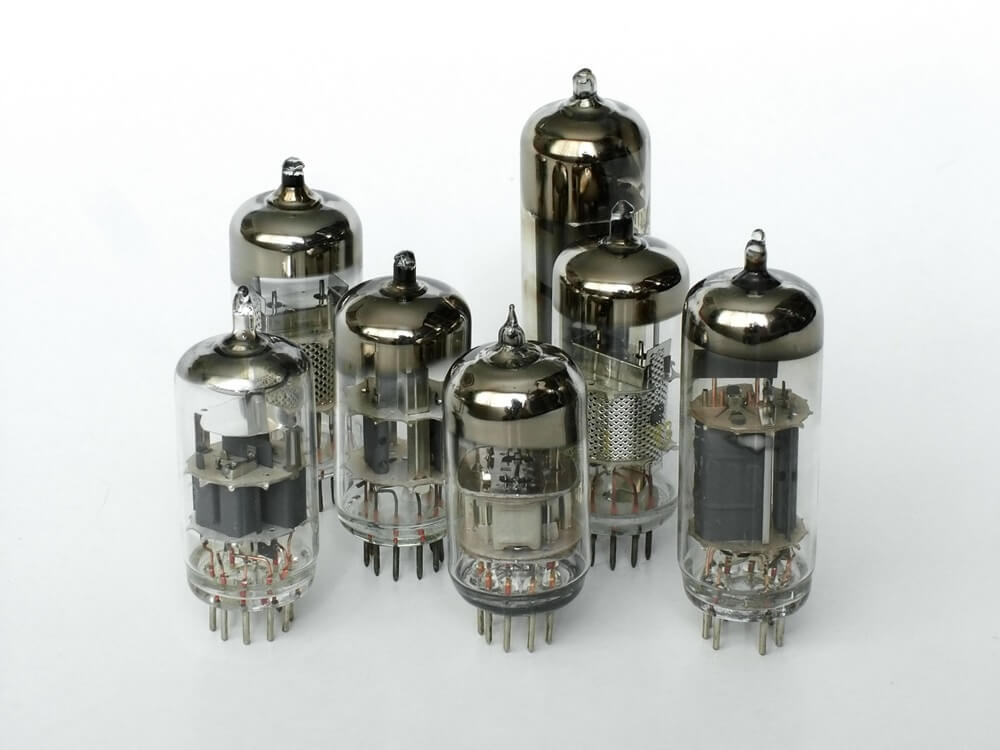
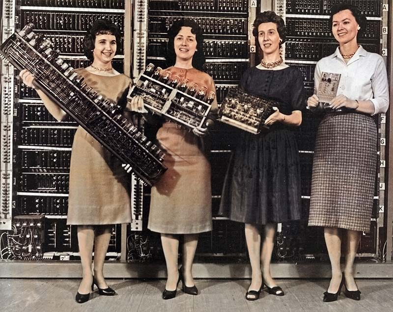
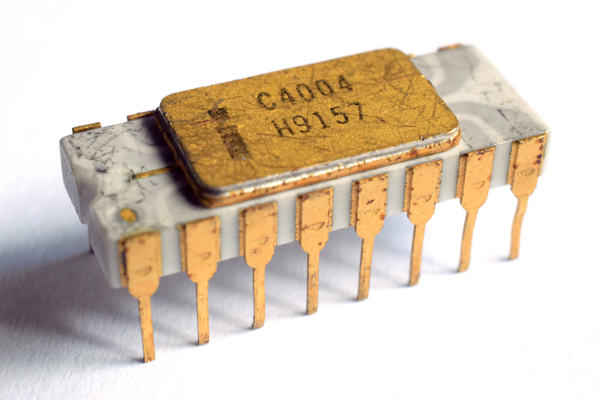
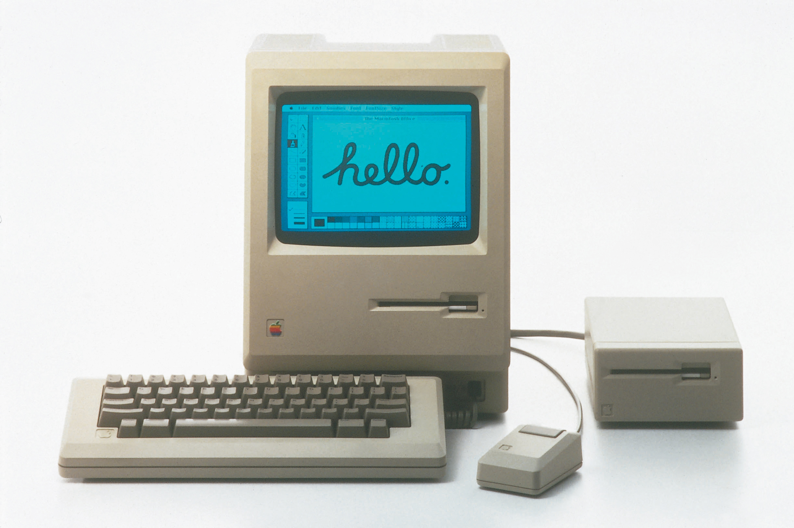

◆ University of Caloocan City ◆
From room-sized vacuum tube machines to the age of artificial intelligence — journey through seven decades of history that shaped the modern world.
Room-sized machines of vacuum tubes that could perform calculations no human ever could.

Integrated circuits shrank the computer. NASA used them to reach the Moon.

An entire CPU on a single chip. The personal computer was no longer a dream.

Computers moved from the lab to the living room. Icons replaced commands.

The World Wide Web connected humanity. The planet shrank overnight.
Social media, smartphones, and the cloud put computing in every pocket.
Machines learned to see, hear, and understand. AI stopped being science fiction.